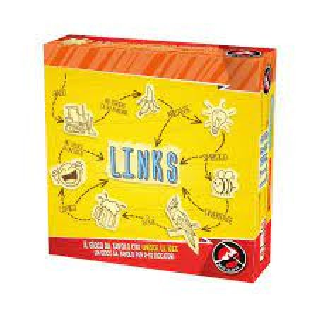

In biblioteca
Links : Il gioco che unisce le idee
- 2-10giocatori
- 15 minminuti
Puoi venire a giocarci in biblioteca.
Giallo e profumato: cosa vi viene in mente? La prima cosa, ditela ad alta voce. Qui non si sbaglia mai — vince la parola più strana, più poetica o più ridicola, e la clessidra da trenta secondi non lascia il tempo di pensarci troppo. Intorno al tavolo ci si sta anche in dieci.
Per chi vuole saperne di più
Cosa c'è nella scatola
65 carte azzurre, 55 carte rosse, 30 pedine stella, 1 clessidra, 1 regolamento
Vedi la scheda nel catalogo della biblioteca →
← Torna al catalogo